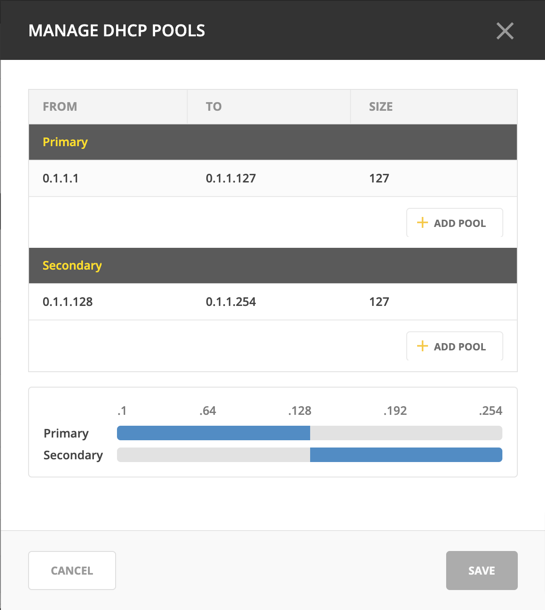
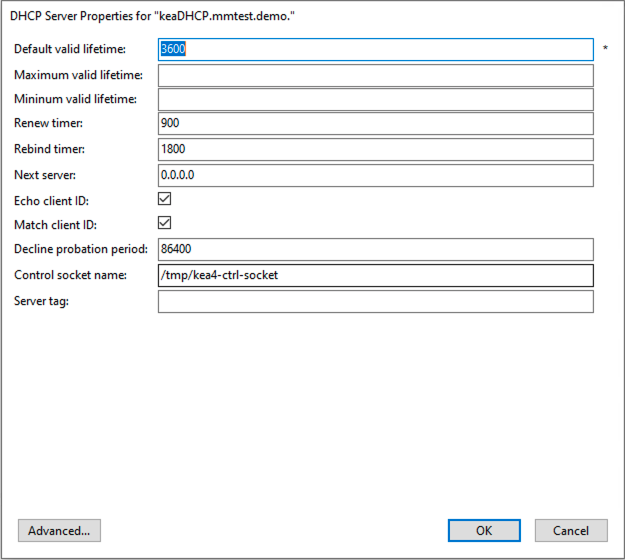

ISC Kea DHCP
Danger
Starting with Micetro 10.0, older versions of the Kea DHCP server are no longer supported. See System requirements for a list of supported versions. You need to remove your existing (older) Kea DHCP servers from the system, and update them to a supported version of Kea before updating to Micetro 10.0 from an older version of the Men&Mice Suite. Not doing so could result in lost access to and data from the older Kea servers in Micetro.
Kea Control Agent
The Kea Control Agent is a daemon that exposes a RESTful control interface for managing Kea servers. The Control Agent daemon can receive control commands over HTTP and either forward these commands to the respective Kea servers or handle them commands on its own.
Note
The default port for the Kea Control Agent is 8000.
Because of the Kea Control Agent, Kea DHCP servers can be added to Micetro without a DHCP Server Controller running on every machine that runs Kea. A single DHCP Server Controller, installed on a machine that can access the instances that run Kea services, is sufficient and will communicate with all Kea servers on Micetro’s behalf.
Adding Kea to Micetro
Because Micetro uses the Kea API to communicate with the DHCP server(s), it requires (in addition to the DHCP Server Controller) the Kea hook library libdhcp_lease_cmds.so.
Note
On certain distributions (like RHEL) check that the kea-hooks package is also installed.
Configuring the Kea hook library
After installing the Kea hook library, open kea-dhcp4.conf and locate the hooks-libraries array. Add the hook to libdhcp_lease_cmds.so:
"hooks-libraries":[
{
"library" : "/lib64/kea/hooks/libdhcp_lease_cmds.so",
"parameters" : {}
}
]
The location of the library depends on your distribution, use whereis libdhcp_lease_cmds.so to find it.
After adding the library, restart Kea and the Kea Control Agent.
Kea high availability
Kea DHCP servers need to be configured for high availability before the primary server is added to Micetro. If the high availability is set up properly, once added to the system Micetro will recognize the failover nodes and the method (load balancing, hot standby, etc.) and configure the server objects accordingly.
For more information, see Kea DHCP High Availability.
Split scopes in load balancing mode
When creating scopes on Kea servers configured in load balancing mode for high availability, Micetro will split the available pool evenly between primary and secondary servers.
{kind=link}
Kea DHCP Server Properties
{kind=link}
- Default/Maximum/Minimum Valid Lifetime
Specifies the time after which a lease will expire if not renewed.
- Renew Timer
Specifies the time when a client will begin a renewal procedure.
- Rebind Timer
Specifies the time when a client will begin a rebind procedure.
- Match Client ID
Specifies if the server should ignore the client identifier during lease lookups and allocations for a particular subnet.
- Echo Client ID
Specifies if the server should send back client-id options when responding to clients.
- Decline Probation Period
Specifies a probation time that will be set on addresses that are in use by some unknown entity.
- Next Server
Specifies the server address to use when clients want to obtain configuration from a TFTP server.
Control Socket
- Name
The path to the UNIX socket. Cannot be empty.
- Server tag
The name used for this server in a High Availability setup.